End-to-end analytics project — from raw profile data to segmentation, predictive modeling, and stakeholder-ready insights.
I analyzed a dataset of 59,946 OkCupid user profiles to understand demographic patterns, behavioral trends, and predictive signals in user attributes. The goal was to move from raw data to actionable insights using a structured analytics workflow.
I built a complete pipeline covering data cleaning, exploratory analysis, K-Means segmentation, and machine learning — then delivered results through this interactive dashboard designed for non-technical stakeholders. The analysis is anchored by one focused business question: who are the most engaged users, and what distinguishes them?
Key outcomes: mapped geographic concentration in the Bay Area, identified education as the strongest lifestyle predictor, segmented users into 3 clusters, and rigorously evaluated a drinks-classification model against a majority-class baseline — surfacing that profile attributes carry only limited predictive signal (an honest negative result, not a vanity metric).
Dating platforms rely on understanding user demographics and behavior to improve matching, personalization, and product strategy. Without structured analysis, decisions are often based on assumptions rather than evidence.
Core question: Who are the most engaged users on the platform, and what distinguishes them — so product and growth teams can act on it? Supporting questions cover who the users are, how they behave, and which attributes are most predictive.
I followed a standard data analytics lifecycle — each phase maps to a section of this dashboard.
| Phase | What I Did | Tools | Dashboard Section |
|---|---|---|---|
| Data Cleaning | Dropped text columns, handled missing values, standardized empty strings | pandas, numpy | — |
| Data Quality | Missing-value audit across all profile fields | pandas | Data Quality |
| EDA | Demographics, geography, education, lifestyle cross-tabs | seaborn, matplotlib | Demographics, Education, Behavior |
| Segmentation | K-Means (age + height), Elbow Method, feature scaling | scikit-learn | Clustering |
| Modeling | Random Forest (class-balanced) vs. majority-class baseline; evaluated on accuracy, balanced accuracy & macro-F1 | scikit-learn | Predictive Analytics |
| Delivery | Auto-generated HTML dashboard with KPIs and navigation | HTML/CSS, Altair | This page |
The core business question — who is most engaged (by last-online recency) and what distinguishes them. Profile completeness emerges as a clear, actionable lever.
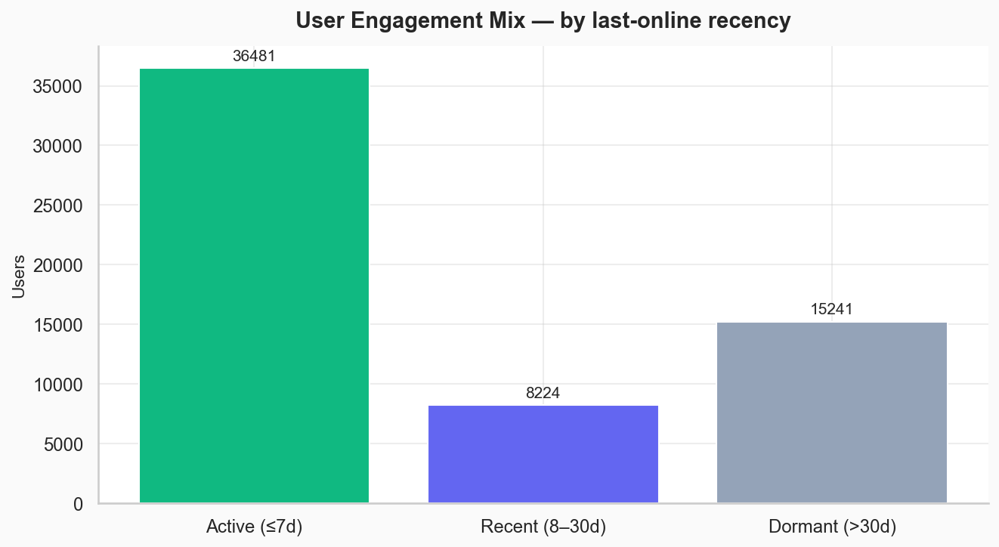
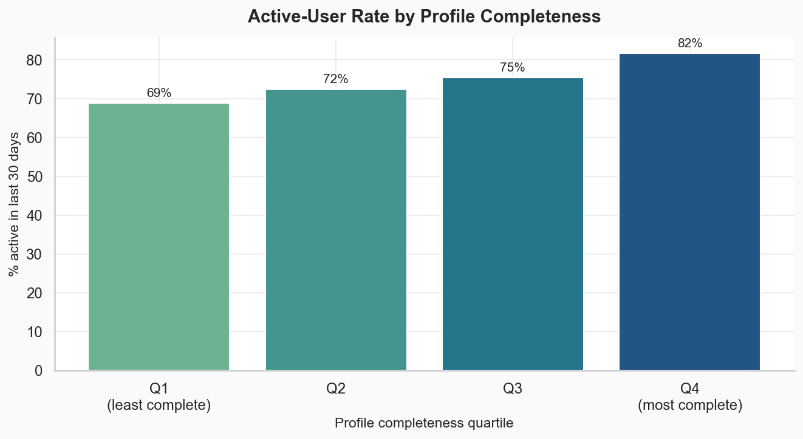
How complete is the data? Missing-value rates across key profile fields.
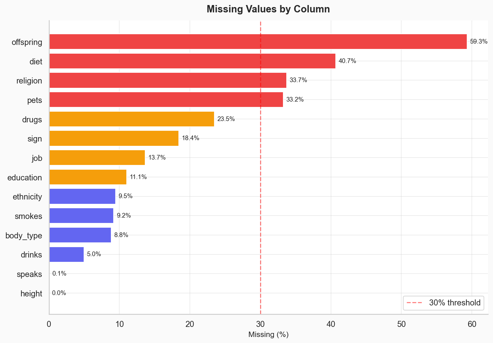
Who are the users? Age, sex, relationship status, and geographic concentration.
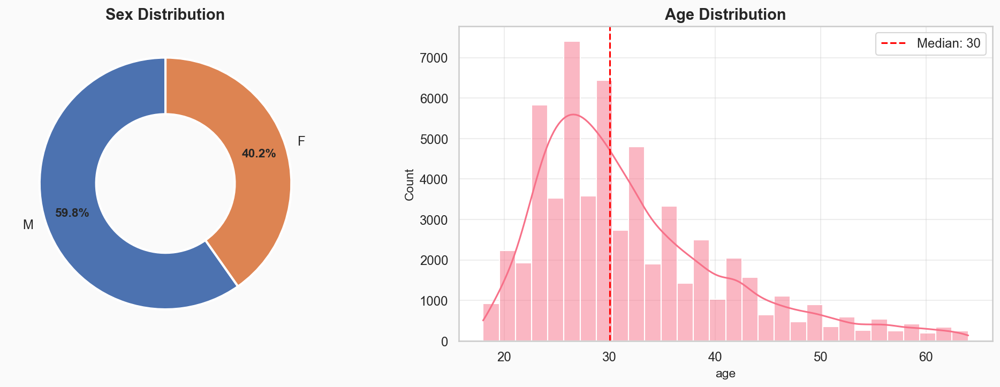
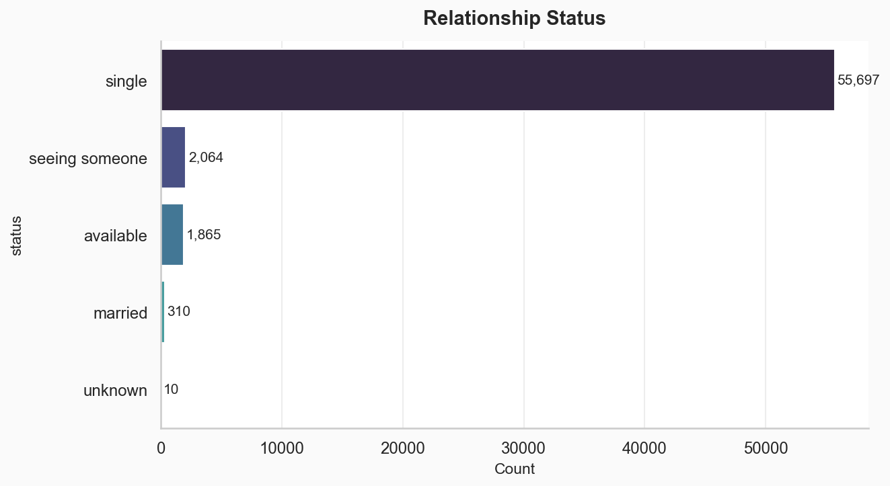
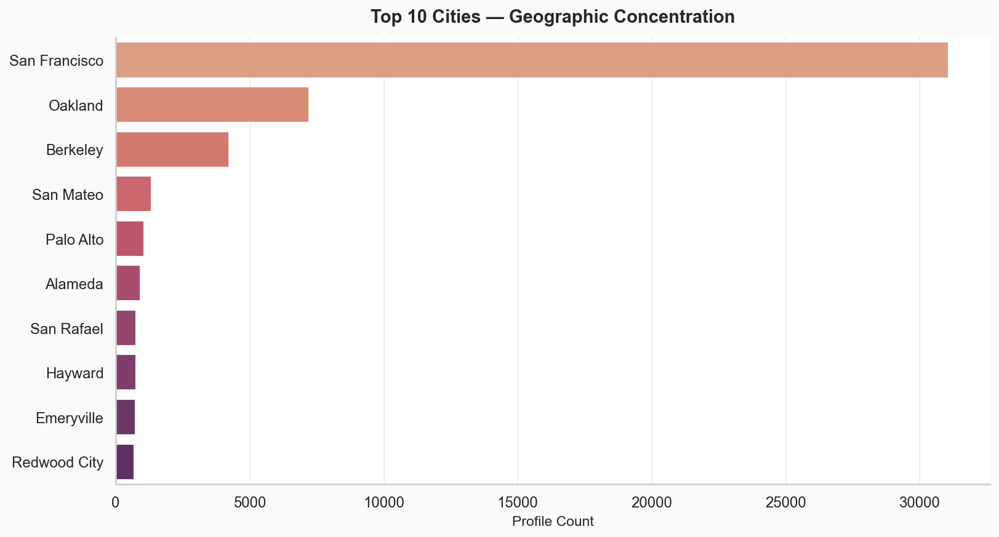
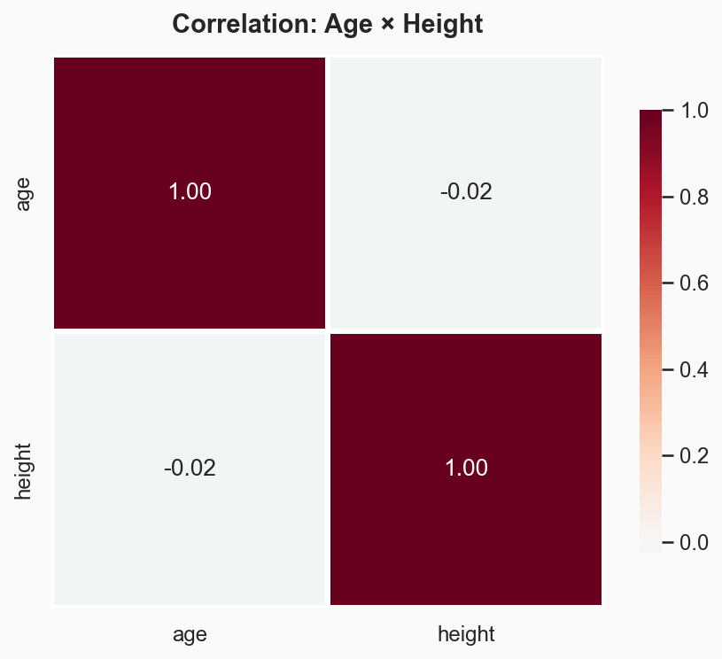
Education levels and how they relate to lifestyle choices.
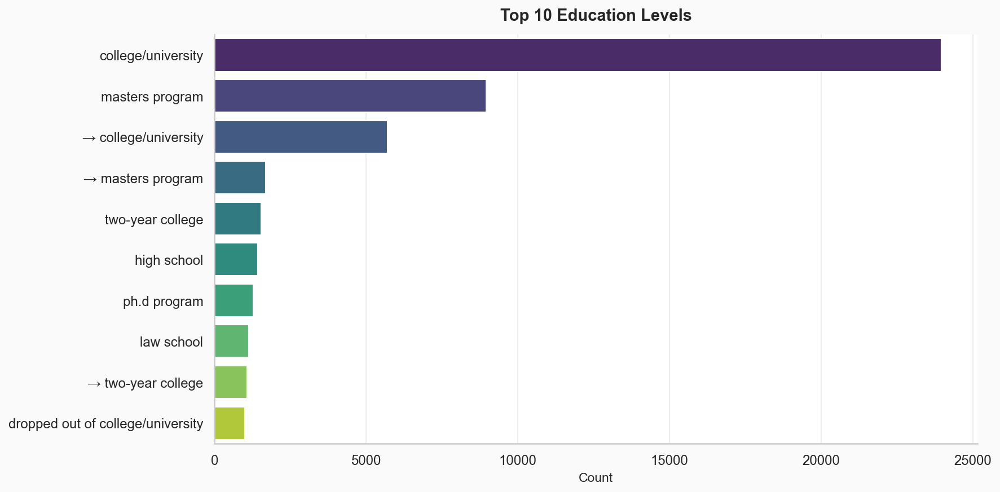
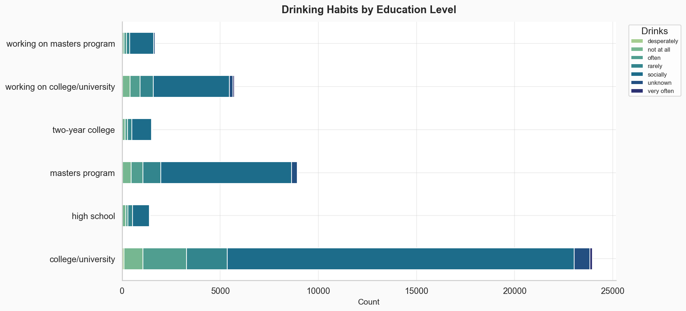
Lifestyle patterns — alcohol, smoking, and body-type distributions.
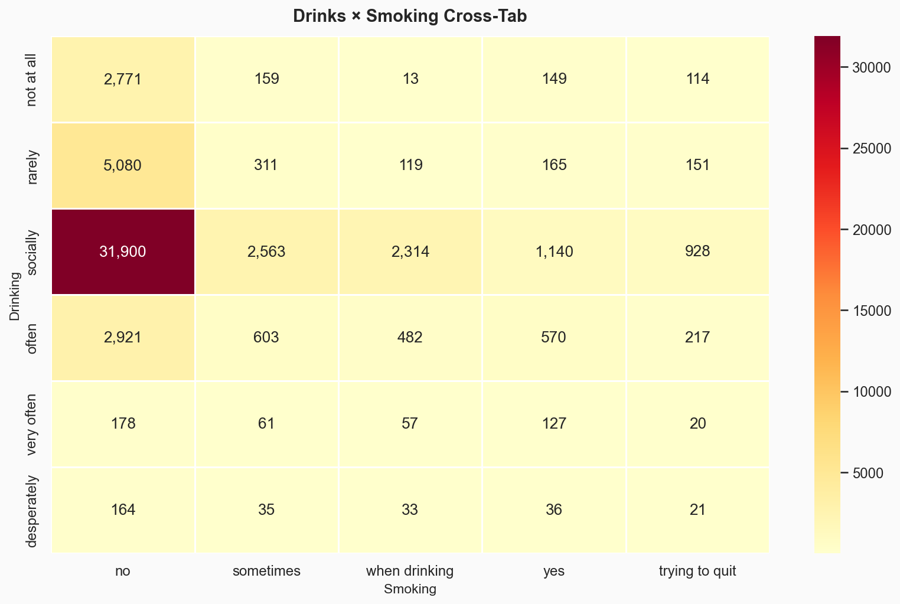
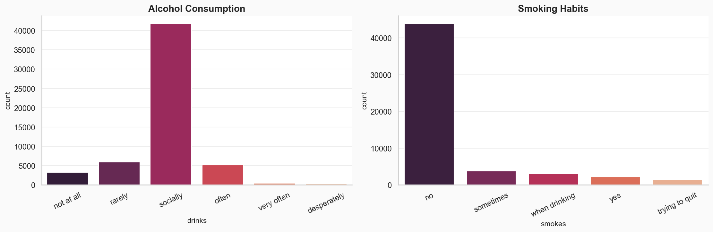
User segmentation via K-Means on age and height.
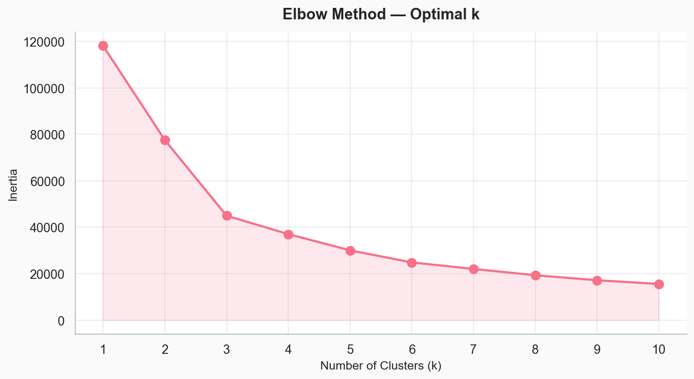
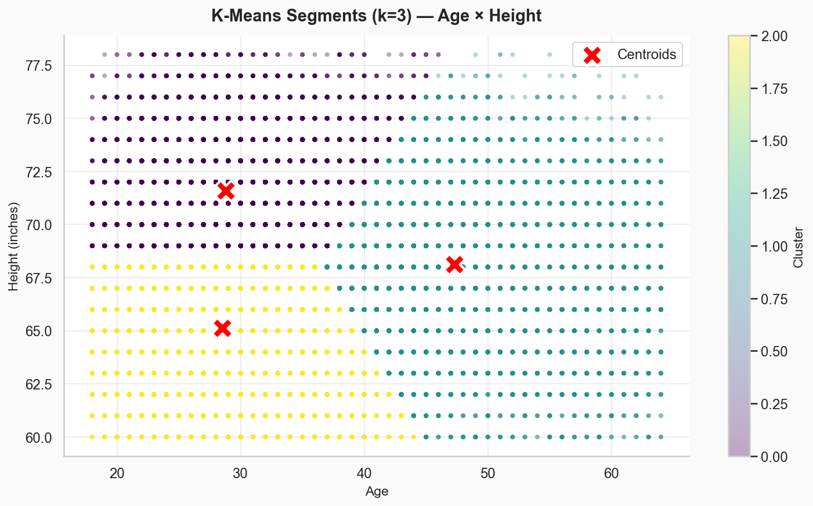
Random Forest predicting drinking habits — evaluated honestly against a majority-class baseline, because raw accuracy is misleading on imbalanced data.
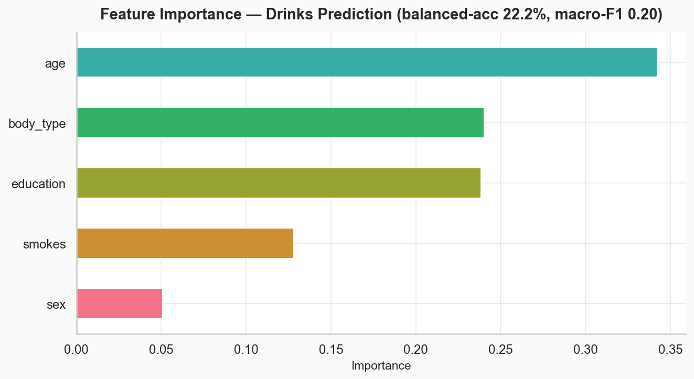
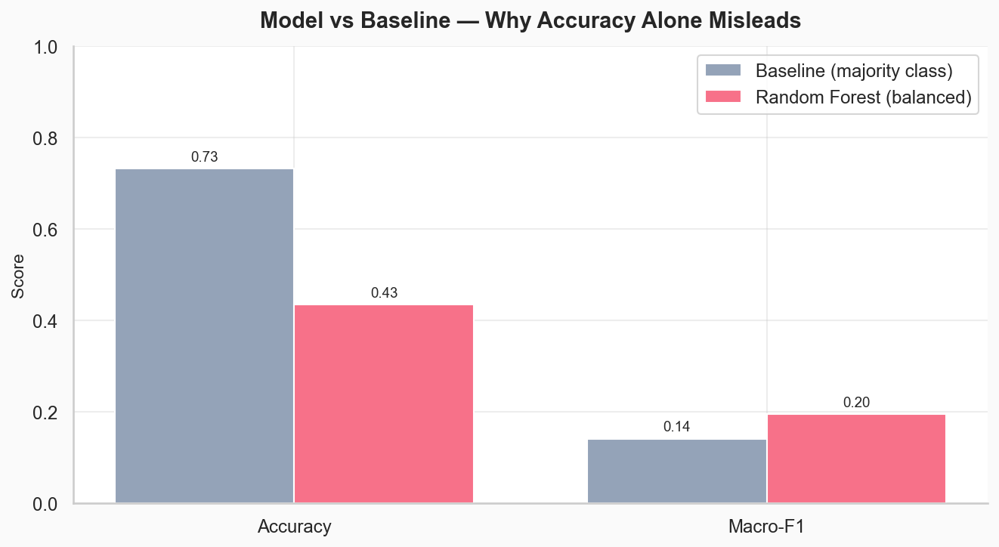
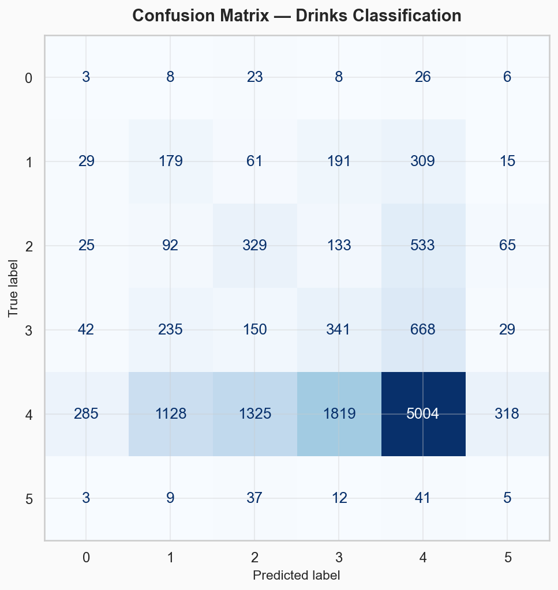
This project was built entirely in Python. The dashboard auto-generates on every pipeline run — no manual updates required.
Hover over cells to explore the relationship between relationship status, sexual orientation, and location.